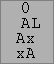
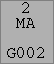
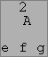
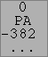
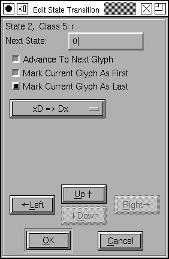
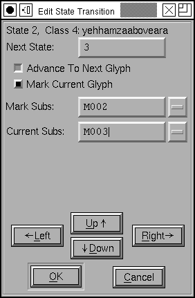
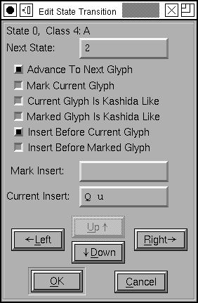
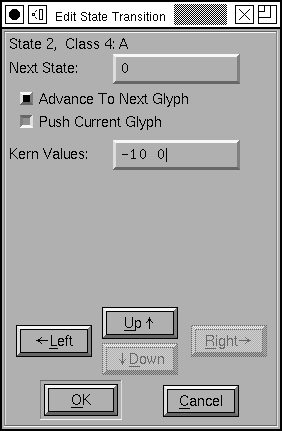

The Mac State Machine Dialog
 The mac uses state machines where opentype
would use a contextual lookup. The example at right (with
appropriate substitutions attached to it) will convert an
initial or medial short-s into a long-s (for doing renaissance
printing).
The mac uses state machines where opentype
would use a contextual lookup. The example at right (with
appropriate substitutions attached to it) will convert an
initial or medial short-s into a long-s (for doing renaissance
printing).
FontForge currently supports 4 types of state machines: contextual glyph substitution, indic rearrangement, contextual glyph insertion, and contextual kerning. The example at right is of contextual glyph substitution.
An example conditional substitution state machine is provided in the tutorial.
On the mac there are four predefined classes, one meaning the end of input, one for all glyphs not specified elsewhere, one for the magic "deleted" glyph (Apple does not always delete a glyph when asked to do so, instead it retains a special mark in the glyph stream indicating that the glyph should be deleted later), and finally a class for the end of a line of text. Any classes after this are user defined. In the example at right there are many user defined classes representing various groupings of arabic letters. Any other glyphs in the font (the digits for example) will automatically be assigned to class 1 ("{Everything Else}").
The state machine itself is shown as a two dimensional matrix of transitions, one transition for every state and class. Classes are shown at the top of the matrix, and states down the side. The transition from state 0 when given input from class 0 is shown in the upper left corner of the matrix, and so on.
When the state machine starts up it will be in one of the first two states. It will be in state 0 at the beginning of input, and in state1 when it starts at the beginning of a new line.
The transitions look slightly differently depending on the type of state machine:
| Indic | Contextual | Insertion | Kerning |
|---|---|---|---|
|
 |
 |
 |
 |
The first line of all transitions shows the next state. The next line contains a set of flags where "M" => the current glyph should be marked (the meaning of this becomes apparent later), "A" => processing should advance to the next glyph. For indic tables there is a third flag shown, "L" => the current glyph is the last glyph of the indic rearrangement, while for kerning tables there is a "P" flag indicating that the current glyph should be pushed onto the kerning stack.
The last two lines have varied meanings depending on the type of the state machine.
- For Indic transitions the two lines should be appended to get the indic rearrangement verb (in the example above that would be "Ax => xA" meaning that the first glyph marked should be moved after the last glyph marked)
- For contextual transitions the two lines specify the
lookup names of simple substitutions. The first one is
applied to the last glyph marked and the second one to the
current glyph (if a line is blank, no substitution is applied
to that glyph here).
If a transition has both a "marked substitution" and the "mark current glyph" flag, I believe the substitution applies to the glyph that was previously marked, and not to the current glyph. (Apple doesn't document this)
Caveat: Apple's 'mort' format was not designed to allow fonteditors to figure out what a state machine did. FontForge can usually make a good guess of what substitutions do which apply to the current glyph, but it will often include extraneous glyph substitutions when a substitution applies to a marked glyph. These should not be harmful (they should never get invoked) but they are annoying ('morx' tables should not have this problem). - For insertion transitions the lines specify the glyphs that are to be inserted. The first line applies to the marked glyph, the second line to current glyph (there may not be room enough to show all the inserted glyphs, in which case the glyph list is truncated). There are additional flags here that are also not shown because of lack of room. They may be viewed by clicking on a transition.
- For kerning transitions the first line shows the first
(few) kerning values, the second line shows either "..." if
there are more kerning values, or nothing.
Note: The number of kerning values MUST match the number of glyphs pushed on the kern stack, or your application crashes.
For a complete description of what these state machines can do you should read Apple's documentation
- On the 'morx' and 'mort' tables
- On the 'kern' table (format 1)
- On state machines in general
- The 'feat' (feature) table
- Apple's Font Feature registry
The general idea is that a word processor converts text into a string of glyphs, and then the state machine is applied to that string. The state machine starts in state 0 or 1, it figures out what class the first glyph belongs to, and indexes into the current state by that class. The transition at that location provides a new state to move to (which might be the same as the current one), it will usually advance to the next glyph (so the new state will be indexed by a different glyph) but sometimes you will want to continue processing the current glyph in the new state. Also it will perform a set of operations which differ depending on the type of state machine.
Many of the state machines have the concept of a "marked" glyph. This is important if the desired change for a given glyph depends on what glyphs follow it. In that case when we reach an interesting glyph we "mark" it, and then, after reading a few more glyphs when we know what to do, we apply a transformation to the marked glyph.
| Indic | Contextual | Insertion | Kerning |
|---|---|---|---|
|
In addition to a "mark"ed glyph, indic
transformations also have a the concept of a "last"
glyph. There are 16 transformations which may be applied
the the glyphs between the "mark"ed and "last" glyphs.
Suppose the glyph stream looks like |
This can apply a substitution to the current glyph, a different substitution to the marked glyph, and it may mark the current glyph. The substitutions are indicated by 4 character tags and should be "Nested" substitutions which may be created by the Element->Char Info dialog. | This can insert a string (up to 31 glyphs) before or after the current and the marked glyphs. | Kerning does not have a single "mark"ed glyph, instead
it can push up to 8 glyphs onto a stack, and at a later
point a set of kerning values may be applied to those
glyphs (so the flag which is usually indicated as "M" for
mark, is here "P" for push). Once all the glyphs have been
pushed, a set of kerning values may be applied. One value
for each pushed glyph. This is a number which indicates how
much the glyph in question should be kerned. If the glyph
stream looks like: F." and you want to kern "." by -300, and """ by 0 em-units, then you would enter -300 0 as kerning values. |
Editing Transitions
To edit a transition, simply click on it and a dialog will pop up, appropriate to the type of state machine.
| Indic | Contextual | Insertion | Kerning |
|---|---|---|---|
|
 |
 |
 |
 |
See above for a description of what the fields mean.
If you wish to add a new state, simply edit a transition so
that its next state field is the state number desired.
FontForge will automatically create the state for
you.